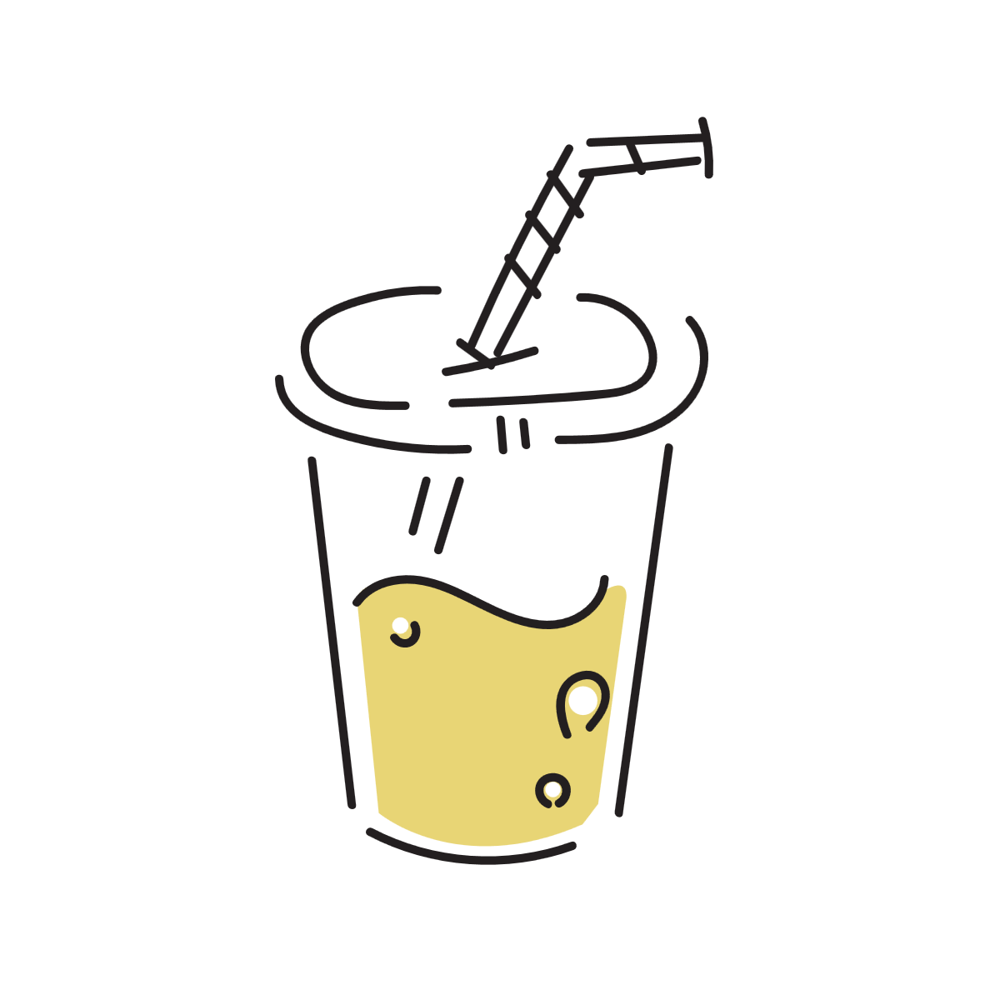
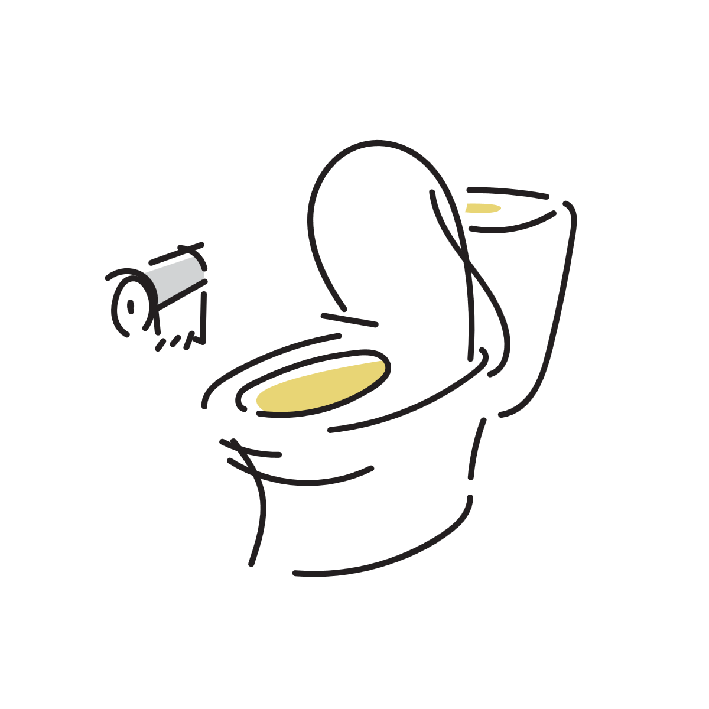

お茶やジュースより水の方がトイレが近くなるのはなぜ？
同じ「水分をとる」という行為でも、 水を飲んだときのほうがトイレが近くなると感じることがあります。
これは単なる量の問題だけではなく、 吸収の速さやホルモンの働き、 体が水分バランスをどう調整するかといった仕組みが関係しています。

水は吸収が早く「余剰水分」として調整されやすい
水は胃から腸へ移動したあと、比較的すばやく吸収されます。
その結果、血液中の水分量が一時的に増えやすくなります。
体は血液の水分量を一定に保つように働くため、 増えすぎた状態になると「余分な水分がある」と判断され、 腎臓が尿として排出する方向に調整を行います。
こうした仕組みによって、水は短時間で尿として処理されやすい状態が生まれます。
飲み物によって「余剰水分」になりやすさが少し違う
お茶やジュースも水分ですが、 体の中では同じように扱われるわけではありません。
水は余計な成分が少ないため、 短時間で吸収されて「余った水分」として調整対象になりやすくなります。
一方で、お茶やジュースは含まれる成分の影響によって、 水だけを飲んだ場合とは少し異なる形で処理されます。
お茶のカフェインの影響
緑茶や紅茶にはカフェインが含まれており、 一時的に尿の量に影響することがあります。
ただし、その作用は全体の水分量の変化と比べると軽微で、 水を飲んだときのような「体が余剰の水分をまとめて調整する反応」を 大きく変えるほどではありません。
そのため、体の反応としては「水かどうか」という違いのほうが影響として残りやすくなります。
ジュースの糖分の影響
ジュースには糖分が多く含まれています。
糖分が多い液体は体液のバランス（浸透圧）に影響し、 吸収のスピードが水よりやや遅くなることがあります。
そのため、急に血液中の水分が増えるという状態が起こりにくくなります。

水分バランスはホルモンで細かく調整されている
体は抗利尿ホルモンなどの働きによって、 尿の量を細かく調整しています。
水を一度に飲むと血液が薄まりやすくなり、 この調整機能が働いて余分な水分を排出する方向に傾きます。
その結果として尿量が増え、 トイレが近く感じられることがあります。
冷たい水ほど早く感じやすい理由
冷たい飲み物は胃腸の動きに影響し、 体が「吸収と排出の調整」を行いやすくなる場合があります。
また、冷たい刺激は自律神経にも作用し、 尿意を感じやすくすることがあります。
ただし個人差が大きく、 温度だけで決まるわけではありません。
トイレが近いのは「体の正常な調整」の一部
水を飲んでトイレが近くなるのは、 体が水分バランスを正常に保っている結果でもあります。
必要以上に溜め込まず、余分な分を排出することで 体内環境を安定させています。
そのため、多くの場合は自然な生理反応の範囲にあります。

受診を考えたほうがよいケース
水分量に関係なく頻繁にトイレに行きたくなる、 夜間に何度も起きる、 強い喉の渇きが続く場合などは注意が必要です。
体の調整以外の要因が関係している可能性もあるため、 気になる場合は医療機関での相談が安心です。
参考情報と注意点
飲み物の種類による尿の変化には個人差があります。 気になる症状が続く場合は専門家への相談も検討してください。
関連アイテム
水分補給グッズやカフェイン量を調整できる飲料、 電解質バランスを意識した製品などは 今後ここに追加する予定です。